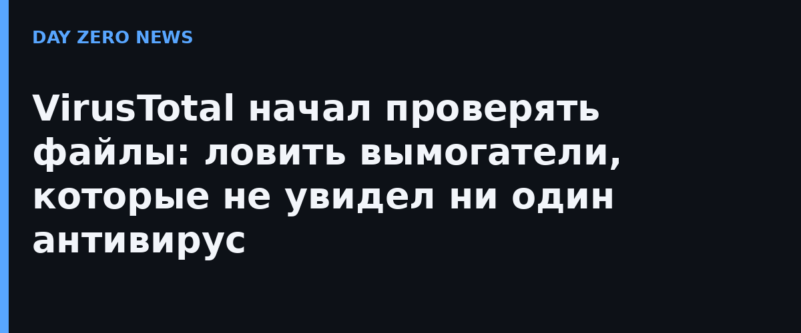

VirusTotal представил поведенческий признак `encrypts-files`: песочницы CAPE Sandbox и Zenbox на Windows и новая macOS Mirage на Apple Silicon запускают подозрительный файл в контролируемой среде с настоящими пользовательскими документами и проверяют, что произошло с файлами на диске — сломанная структура документов, странные байтовые паттерны, возросшая случайность данных. Важная деталь: сам по себе вызов крипто-API или «много файловых операций» теперь не считается доказательством вымогателя — подтверждается именно повреждение документов. Это закрывает лазейку малвари, которая использует встроенные AES, ChaCha20, XOR или частичное шифрование.
Показательный кейс — файл `system_update.pyw`, связанный с кампией вымогательства `.k404` и загруженный 17–18 ноября: на статическом скане 0 детектов из 75 антивирусных движков. Песочница Zenbox увидела, как он запускается через pythonw.exe, удаляет себя и переписывает документы на рабочем столе в шифртекст с расширением `.k404`. Связанный `K404T_Fidye.exe` имел 10/75, локер `lkd.exe` — 3/75, `HotCrypt.exe` — 1/75: у всех CAPE и Zenbox подтвердили шифрование пользовательских документов. Среди пойманных также INC Ransom — группировка, светившаяся в атаках на клиники.
С 17 ноября тег `tag:encrypts-files` сработал на 55 файлах из 328 257 новых уникальных образцов (405 469 с учётом пересканирований). Все 55 совпадений при ручной проверке оказались вредоносными — ноль ложных срабатываний; в предрелизном бэктесте дополнительно проверены 9 976 отчётов CAPE и 400 прогонов macOS Mirage. Параллельно VirusTotal ужесточил маппинг MITRE ATT&CK T1486 («Data Encrypted for Impact») в CAPE: теперь техника присваивается только после подтверждённого шифрования документов. Аналитики могут искать по `entity:file tag:encrypts-files` и строить Livehunt-правила на YARA-X трейт `vt.BehaviourTrait.ENCRYPTS_FILES`.
Честное предупреждение от самих авторов: отсутствие тега — не «чистое» заключение. Малваре могут понадобиться пароль, ввод пользователя, сеть или просто больше времени, чтобы начать шифровать. И результат 0/75 описывает момент анализа, а не вечный приговор антивирусам. Но сама логика — вердикт по наблюдаемому ущербу, а не по сигнатурам — хороший ориентир для всей индустрии: поведенческие песочницы перестают быть чёрным ящиком и начинают выдавать проверяемое доказательство.